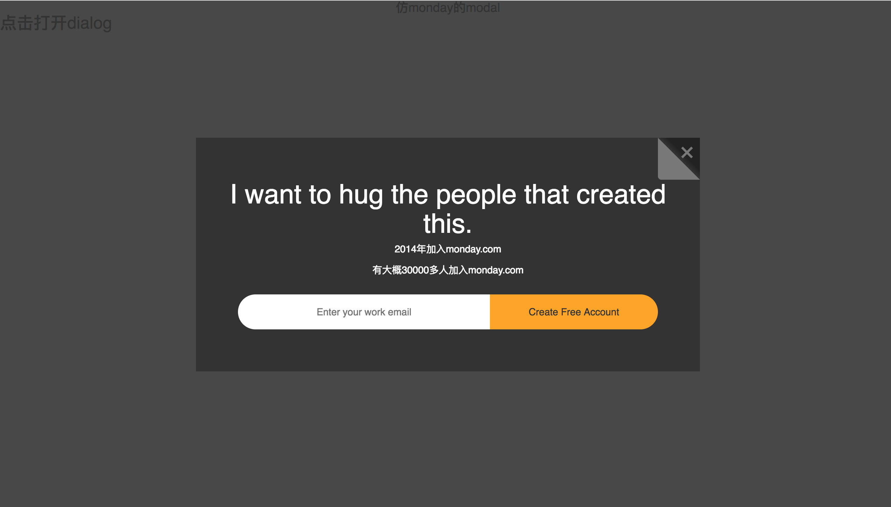

<!DOCTYPE HTML>
<html lang="" >
    <head>
        <meta charset="UTF-8">
        <meta content="text/html; charset=utf-8" http-equiv="Content-Type">
        <title>基于vue的modal实现 · GitBook</title>
        <meta http-equiv="X-UA-Compatible" content="IE=edge" />
        <meta name="description" content="">
        <meta name="generator" content="GitBook 3.2.3">
        
        
        
    
    <link rel="stylesheet" href="../gitbook/style.css">

    
            
                
                <link rel="stylesheet" href="../gitbook/gitbook-plugin-highlight/website.css">
                
            
                
                <link rel="stylesheet" href="../gitbook/gitbook-plugin-search/search.css">
                
            
                
                <link rel="stylesheet" href="../gitbook/gitbook-plugin-fontsettings/website.css">
                
            
        

    

    
        
    
        
    
        
    
        
    
        
    
        
    

        
    
    
    <meta name="HandheldFriendly" content="true"/>
    <meta name="viewport" content="width=device-width, initial-scale=1, user-scalable=no">
    <meta name="apple-mobile-web-app-capable" content="yes">
    <meta name="apple-mobile-web-app-status-bar-style" content="black">
    <link rel="apple-touch-icon-precomposed" sizes="152x152" href="../gitbook/images/apple-touch-icon-precomposed-152.png">
    <link rel="shortcut icon" href="../gitbook/images/favicon.ico" type="image/x-icon">

    
    <link rel="next" href="vue监听路由的变化.html" />
    
    
    <link rel="prev" href="vue中父子组件之间的通信.html" />
    

    </head>
    <body>
        
<div class="book">
    <div class="book-summary">
        
            
<div id="book-search-input" role="search">
    <input type="text" placeholder="Type to search" />
</div>

            
                <nav role="navigation">
                


<ul class="summary">
    
    

    

    
        
        
    
        <li class="chapter " data-level="1.1" data-path="../">
            
                <a href="../">
            
                    
                    Introduction
            
                </a>
            

            
        </li>
    
        <li class="chapter " data-level="1.2" data-path="./">
            
                <a href="./">
            
                    
                    vue
            
                </a>
            

            
            <ul class="articles">
                
    
        <li class="chapter " data-level="1.2.1" data-path="vueBootstrap.html">
            
                <a href="vueBootstrap.html">
            
                    
                    在vue中引入bootstrap和jquery
            
                </a>
            

            
        </li>
    
        <li class="chapter " data-level="1.2.2" data-path="alliIconfont.html">
            
                <a href="alliIconfont.html">
            
                    
                    在vue中引入阿里图标
            
                </a>
            

            
        </li>
    
        <li class="chapter " data-level="1.2.3" data-path="vue中引入外部css文件.html">
            
                <a href="vue中引入外部css文件.html">
            
                    
                    在vue中引入外部css文件
            
                </a>
            

            
        </li>
    
        <li class="chapter " data-level="1.2.4" data-path="vue中父子组件之间的通信.html">
            
                <a href="vue中父子组件之间的通信.html">
            
                    
                    vue中父子组件之间的通信
            
                </a>
            

            
        </li>
    
        <li class="chapter active" data-level="1.2.5" data-path="基于vue的modal实现.html">
            
                <a href="基于vue的modal实现.html">
            
                    
                    基于vue的modal实现
            
                </a>
            

            
        </li>
    
        <li class="chapter " data-level="1.2.6" data-path="vue监听路由的变化.html">
            
                <a href="vue监听路由的变化.html">
            
                    
                    vue监听路由的变化
            
                </a>
            

            
        </li>
    
        <li class="chapter " data-level="1.2.7" data-path="vue数据不更新的原因.html">
            
                <a href="vue数据不更新的原因.html">
            
                    
                    解决vue数据不更新(转载)
            
                </a>
            

            
        </li>
    
        <li class="chapter " data-level="1.2.8" data-path="解决vue项目中的因为书写规范而报的错.html">
            
                <a href="解决vue项目中的因为书写规范而报的错.html">
            
                    
                    解决vue项目中的因为书写规范而报的错
            
                </a>
            

            
        </li>
    
        <li class="chapter " data-level="1.2.9" data-path="基于vue的头像上传的插件.html">
            
                <a href="基于vue的头像上传的插件.html">
            
                    
                    基于vue的头像上传的插件
            
                </a>
            

            
        </li>
    

            </ul>
            
        </li>
    
        <li class="chapter " data-level="1.3" data-path="../js/">
            
                <a href="../js/">
            
                    
                    js
            
                </a>
            

            
            <ul class="articles">
                
    
        <li class="chapter " data-level="1.3.1" data-path="../js/浏览器窗口的滚动条的位置.html">
            
                <a href="../js/浏览器窗口的滚动条的位置.html">
            
                    
                    浏览器窗口的滚动条的位置
            
                </a>
            

            
        </li>
    
        <li class="chapter " data-level="1.3.2" data-path="../js/导航条的背景变色.html">
            
                <a href="../js/导航条的背景变色.html">
            
                    
                    当浏览器窗口的滚动条变化，导航条的背景变色
            
                </a>
            

            
        </li>
    
        <li class="chapter " data-level="1.3.3" data-path="../js/实现打字效果的js插件typed.js.html">
            
                <a href="../js/实现打字效果的js插件typed.js.html">
            
                    
                    实现打字效果的js插件typed.js
            
                </a>
            

            
        </li>
    
        <li class="chapter " data-level="1.3.4" data-path="../js/js设置滚动条的位置.html">
            
                <a href="../js/js设置滚动条的位置.html">
            
                    
                    js设置滚动条的位置
            
                </a>
            

            
        </li>
    

            </ul>
            
        </li>
    
        <li class="chapter " data-level="1.4" data-path="../h5/">
            
                <a href="../h5/">
            
                    
                    h5
            
                </a>
            

            
            <ul class="articles">
                
    
        <li class="chapter " data-level="1.4.1" data-path="../h5/figure.html">
            
                <a href="../h5/figure.html">
            
                    
                    figure标签的使用
            
                </a>
            

            
        </li>
    
        <li class="chapter " data-level="1.4.2" data-path="../h5/比较好的响应式的网站.html">
            
                <a href="../h5/比较好的响应式的网站.html">
            
                    
                    比较好的响应式的网站
            
                </a>
            

            
        </li>
    
        <li class="chapter " data-level="1.4.3" data-path="../h5/响应式图片img中的srcset和sizes.html">
            
                <a href="../h5/响应式图片img中的srcset和sizes.html">
            
                    
                    响应式图片img中的srcset和sizes
            
                </a>
            

            
        </li>
    

            </ul>
            
        </li>
    
        <li class="chapter " data-level="1.5" data-path="../css/">
            
                <a href="../css/">
            
                    
                    css
            
                </a>
            

            
            <ul class="articles">
                
    
        <li class="chapter " data-level="1.5.1" data-path="../css/waterBorderRadius.html">
            
                <a href="../css/waterBorderRadius.html">
            
                    
                    基于vue的模拟gitbook的右下角的评论按钮
            
                </a>
            

            
        </li>
    
        <li class="chapter " data-level="1.5.2" data-path="../css/transtion属性.html">
            
                <a href="../css/transtion属性.html">
            
                    
                    css中的transition属性
            
                </a>
            

            
        </li>
    
        <li class="chapter " data-level="1.5.3" data-path="../css/position和transform使元素居中的方法.html">
            
                <a href="../css/position和transform使元素居中的方法.html">
            
                    
                    position和transform使元素居中的方法 (转载)
            
                </a>
            

            
        </li>
    
        <li class="chapter " data-level="1.5.4" data-path="../css/box-shadow样式.html">
            
                <a href="../css/box-shadow样式.html">
            
                    
                    box-shadow的样式
            
                </a>
            

            
        </li>
    
        <li class="chapter " data-level="1.5.5" data-path="../css/backgroundLinearGradient线性渐变.html">
            
                <a href="../css/backgroundLinearGradient线性渐变.html">
            
                    
                    backgroundLinearGradient线性渐变
            
                </a>
            

            
        </li>
    
        <li class="chapter " data-level="1.5.6" data-path="../css/modal-background.html">
            
                <a href="../css/modal-background.html">
            
                    
                    自己写modal背景实现效果
            
                </a>
            

            
        </li>
    
        <li class="chapter " data-level="1.5.7" data-path="../css/font-sizez中的vw.html">
            
                <a href="../css/font-sizez中的vw.html">
            
                    
                    font-sizez中的vw
            
                </a>
            

            
        </li>
    
        <li class="chapter " data-level="1.5.8" data-path="../css/css3中的媒体查询.html">
            
                <a href="../css/css3中的媒体查询.html">
            
                    
                    css3中的媒体查询
            
                </a>
            

            
        </li>
    
        <li class="chapter " data-level="1.5.9" data-path="../css/css中的em单位.html">
            
                <a href="../css/css中的em单位.html">
            
                    
                    css中的em单位
            
                </a>
            

            
        </li>
    
        <li class="chapter " data-level="1.5.10" data-path="../css/css清除浮动的float的三种方法.html">
            
                <a href="../css/css清除浮动的float的三种方法.html">
            
                    
                    css清除浮动的float的三种方法（转载）
            
                </a>
            

            
        </li>
    
        <li class="chapter " data-level="1.5.11" data-path="../css/font-family设置字体上下显示.html">
            
                <a href="../css/font-family设置字体上下显示.html">
            
                    
                    font-family设置字体上下显示
            
                </a>
            

            
        </li>
    
        <li class="chapter " data-level="1.5.12" data-path="../css/css中的font-family的样式.html">
            
                <a href="../css/css中的font-family的样式.html">
            
                    
                    css中的font-family的样式，引入Google Fonts
            
                </a>
            

            
        </li>
    
        <li class="chapter " data-level="1.5.13" data-path="../css/transform使元素居中的bug.html">
            
                <a href="../css/transform使元素居中的bug.html">
            
                    
                    transform使元素居中的bug
            
                </a>
            

            
        </li>
    

            </ul>
            
        </li>
    
        <li class="chapter " data-level="1.6" data-path="../添加.gitignore文件.html">
            
                <a href="../添加.gitignore文件.html">
            
                    
                    添加.gitignore文件
            
                </a>
            

            
        </li>
    
        <li class="chapter " data-level="1.7" data-path="../github/">
            
                <a href="../github/">
            
                    
                    github
            
                </a>
            

            
            <ul class="articles">
                
    
        <li class="chapter " data-level="1.7.1" data-path="../github/将自己的项目放到github上.html">
            
                <a href="../github/将自己的项目放到github上.html">
            
                    
                    将自己的项目放到github上并在浏览器上显示出现相应的网页
            
                </a>
            

            
        </li>
    

            </ul>
            
        </li>
    
        <li class="chapter " data-level="1.8" data-path="../css/GreenSockTweenMax.html">
            
                <a href="../css/GreenSockTweenMax.html">
            
                    
                    GreenSock (TweenMax)极简入门指南
            
                </a>
            

            
        </li>
    
        <li class="chapter " data-level="1.9" data-path="../本地起一个cli的指令.html">
            
                <a href="../本地起一个cli的指令.html">
            
                    
                    本地起一个cli的指令
            
                </a>
            

            
        </li>
    
        <li class="chapter " data-level="1.10" data-path="../org3.html">
            
                <a href="../org3.html">
            
                    
                    org3
            
                </a>
            

            
        </li>
    
        <li class="chapter " data-level="1.11" data-path="../hyperledger.md">
            
                <span>
            
                    
                    hyperledger
            
                </a>
            

            
            <ul class="articles">
                
    
        <li class="chapter " data-level="1.11.1" data-path="../hyperledger/hyperledger.html">
            
                <a href="../hyperledger/hyperledger.html">
            
                    
                    hyperledger中下载加密工具
            
                </a>
            

            
        </li>
    

            </ul>
            
        </li>
    
        <li class="chapter " data-level="1.12" data-path="../docker.html">
            
                <a href="../docker.html">
            
                    
                    docker
            
                </a>
            

            
            <ul class="articles">
                
    
        <li class="chapter " data-level="1.12.1" data-path="../docker/docker的常用指令.html">
            
                <a href="../docker/docker的常用指令.html">
            
                    
                    docker的常用指令
            
                </a>
            

            
        </li>
    

            </ul>
            
        </li>
    

    

    <li class="divider"></li>

    <li>
        <a href="https://www.gitbook.com" target="blank" class="gitbook-link">
            Published with GitBook
        </a>
    </li>
</ul>


                </nav>
            
        
    </div>

    <div class="book-body">
        
            <div class="body-inner">
                
                    

<div class="book-header" role="navigation">
    

    <!-- Title -->
    <h1>
        <i class="fa fa-circle-o-notch fa-spin"></i>
        <a href=".." >基于vue的modal实现</a>
    </h1>
</div>


                    <div class="page-wrapper" tabindex="-1" role="main">
                        <div class="page-inner">
                            
<div id="book-search-results">
    <div class="search-noresults">
    
                                <section class="normal markdown-section">
                                
                                <h5 id="&#x57FA;&#x4E8E;vue&#x7684;modal&#x5B9E;&#x73B0;&#xFF08;&#x4EFF;mondaycom&#x7684;modal&#xFF09;">&#x57FA;&#x4E8E;vue&#x7684;modal&#x5B9E;&#x73B0;&#xFF08;&#x4EFF;monday.com&#x7684;modal&#xFF09;</h5>
<p>&#x5199;modal&#x8981;&#x6709;&#x4E00;&#x4E2A;&#x7236;&#x7EC4;&#x4EF6;&#xFF0C;&#x4E00;&#x4E2A;&#x5B50;&#x7EC4;&#x4EF6;&#x3002;&#x7236;&#x7EC4;&#x4EF6;&#x4E2D;&#x70B9;&#x51FB;&#x6253;&#x5F00;modal&#xFF0C;&#x5B50;&#x7EC4;&#x4EF6;&#x4E2D;&#x5173;&#x95ED;nodal.
&#x8FD9;&#x91CC;&#x901A;&#x8FC7;v-if&#x6765;&#x5B9E;&#x73B0;modal&#x7684;&#x6253;&#x5F00;&#x548C;&#x5173;&#x95ED;&#x3002;</p>
<h6 id="&#x7236;&#x7EC4;&#x4EF6;-mondaymodalvue">&#x7236;&#x7EC4;&#x4EF6; mondayModal.vue</h6>
<pre><code>&lt;template&gt;
  &lt;div class=&quot;mondayModal&quot;&gt;
    &lt;h4&gt;{{txt}}&lt;/h4&gt;
    &lt;h3 @click=&apos;isShow = true&apos;&gt;&#x70B9;&#x51FB;&#x6253;&#x5F00;dialog&lt;/h3&gt;
    &lt;mondayDialog v-if=&apos;isShow&apos; :show=&apos;isShow&apos; @change=&apos;changeShow&apos;/&gt;
  &lt;/div&gt;
&lt;/template&gt;
&lt;script&gt;
import mondayDialog from &apos;./mondayDialog.vue&apos;
export default {
  name: &quot;mondayModal&quot;,
  data: () =&gt; ({
    txt: &apos;&#x4EFF;monday&#x7684;modal&apos;,
    isShow: false
  }),
  components: {
    mondayDialog
  },
  methods: {
    changeShow(val) {
      this.isShow = val
    }
  }
}
&lt;/script&gt;
&lt;style lang=&apos;scss&apos; scoped&gt;
//&#x6E05;&#x9664;&#x9ED8;&#x8BA4;&#x6837;&#x5F0F;&#x7684;css
@import &apos;../style/reset.css&apos;;

.mondayLmitation{
  width: 100%;
  height: 100%;
   h4{
      text-align: center;
   }
   h3{
     cursor: pointer;
   }
 }
&lt;/style&gt;
</code></pre><h6 id="&#x5B50;&#x7EC4;&#x4EF6;mondaydialogvue">&#x5B50;&#x7EC4;&#x4EF6;mondayDialog.vue</h6>
<pre><code>&lt;template&gt;
&lt;transition name=&apos;slide-fade&apos;&gt;
  &lt;div class=&quot;mondayDialog&quot;&gt;
    &lt;div class=&quot;modal-background&quot;&gt;&lt;/div&gt;
    &lt;div class=&quot;content&quot;&gt;
      &lt;div class=&quot;close-dialog&quot;&gt;
        &lt;a @click=&apos;closeDia&apos;&gt;+&lt;/a&gt;
      &lt;/div&gt;
       &lt;h3&gt;{{txt}}&lt;/h3&gt;
       &lt;p&gt;2014&#x5E74;&#x52A0;&#x5165;monday.com&lt;/p&gt;
       &lt;p&gt;&#x6709;&#x5927;&#x6982;30000&#x591A;&#x4EBA;&#x52A0;&#x5165;monday.com&lt;/p&gt;
       &lt;div class=&quot;buttonBox&quot;&gt;
          &lt;input type=&quot;text&quot; name=&quot;&quot; value=&quot;&quot; placeholder=&apos;Enter your work email&apos;&gt;
          &lt;div class=&quot;sendButton&quot;&gt;
             &lt;button type=&quot;button&quot; name=&quot;button&quot;&gt;Create Free Account&lt;/button&gt;
          &lt;/div&gt;
       &lt;/div&gt;
    &lt;/div&gt;
  &lt;/div&gt;
&lt;/transition&gt;
&lt;/template&gt;
&lt;script&gt;
export default {
  name: &quot;mondayDialog&quot;,
  data: () =&gt; ({
    a: 1,
    txt: &apos;I want to hug the people that created this.&apos;,
    opendialog: true
  }),
  props: [&apos;show&apos;],
  methods: {
    closeDia () {
      this.show = this.opendialog
      this.opendialog  = false
      this.$emit(&apos;change&apos;,this.opendialog)
    }
  }
}
&lt;/script&gt;
&lt;style lang=&quot;scss&quot; scoped&gt;
@import &apos;../style/reset.css&apos;;
.slide-fade-enter-active {
  transition: all .3s ease;
}
.slide-fade-leave-active {
  transition: all .3s cubic-bezier(1.0, 0.5, 0.8, 1.0);
}
.slide-fade-enter, .slide-fade-leave-to {
  opacity: 0;
}
 .mondayDialog{
   .modal-background{
     width: 100%;
     height: 100%;
      position: fixed;
      top: 0;
      left: 0;
      background: #333;
      opacity: 0.9;
      z-index: 999;
      transition: all 2s ease-out;
   }
   .close-dialog{
     width: 60px;
     height: 60px;
     background: linear-gradient(45deg, rgb(120,120,120) 0%, rgb(120, 120, 120) 50%, rgb(52, 52, 52) 50%, rgb(34, 34, 34) 61%);
     border-radius: 0 0 0 5px;
     position: absolute;
     top: 0;
     right: 0;
     a{
       color: rgb(120, 120,120);
       font-size: 40px;
       // font-weight: 400;
       position: absolute;
       right: 5px;
       top: -10px;
       transform: rotateZ(45deg);
       cursor: pointer;
     }
  }
   .content{
     width: 720px;
     position: fixed;
     top: 50%;
     left: 50%;
     transform: translate3d(-50%, -50%,0);
     padding: 60px 40px 40px;
     text-align: center;
     background: rgb(51, 51, 51);
     z-index: 1000;
     color: rgb(255, 255, 255);
     h3{
       font-size: 3vw;
       font-weight: 500;
       text-align: center;
       padding: 0;
       margin: 0;
     }
     p{
       padding: 5px;
     }
     .buttonBox{
       padding: 20px;
       width: 100%;
       height: 90px;
       input{
         width: 60%;
         float: left;
         height: 100%;
         border: none;
         text-align: center;
         border-radius: 30px 0 0 30px;
         color: #333;
         outline: none;
       }
       .sendButton{
         float: left;
         width: 40%;
         height: 100%;
         button{
           border: none;
           height: 100%;
           width: 100%;
           color: #333;
           background: orange;
           border-radius: 0 30px 30px 0;
           outline: none;
         }
         button:hover{
           opacity: 0.7;
         }
       }
     }

   }
 }
&lt;/style&gt;
</code></pre><p>&#x5B9E;&#x73B0;&#x6548;&#x679C;&#xFF1A;</p>
<p></p>
<h6 id="&#x8981;&#x70B9;1-&#xFF1A;css&#x6837;&#x5F0F;">&#x8981;&#x70B9;1 &#xFF1A;(css&#x6837;&#x5F0F;)</h6>
<p>modal&#x7684;&#x80CC;&#x666F;div&#x548C;&#x5185;&#x5BB9;&#x7684;div&#x90FD;&#x8981;&#x56FA;&#x5B9A;&#x5B9A;&#x4F4D;&#x3002;</p>
<p>modal&#x7684;&#x80CC;&#x666F;&#xFF1A;z-index: 999;</p>
<pre><code>.modal-background{
  width: 100%;
  height: 100%;
   position: fixed;
   top: 0;
   left: 0;
   background: #333;
   opacity: 0.9;
   z-index: 999;
   transition: all 2s ease-out;
}
</code></pre><p>modal&#x7684;&#x5185;&#x5BB9;&#xFF1A;z-index: 1000;</p>
<pre><code>.content{
  width: 720px;
  position: fixed;
  top: 50%;
  left: 50%;
  transform: translate3d(-50%, -50%,0);
  padding: 60px 40px 40px;
  text-align: center;
  background: rgb(51, 51, 51);
  z-index: 1000;
  color: rgb(255, 255, 255)
}
</code></pre><p>&#x53F3;&#x4E0A;&#x89D2;&#x7684;&#x6298;&#x89D2;&#x6548;&#x679C;&#xFF1A;</p>
<pre><code>.close-dialog{
  width: 60px;
  height: 60px;
  background: linear-gradient(45deg, rgb(120,120,120) 0%, rgb(120120, 120) 50%, rgb(52, 52, 52) 50%, rgb(34, 34, 34) 61%);
  border-radius: 0 0 0 5px;
  position: absolute;
  top: 0;
  right: 0;
}
</code></pre><p>&#x91CD;&#x8981;&#x7684;&#x662F;&#xFF1A;<code>background: linear-gradient(45deg, rgb(120,120,120) 0%, rgb(120120, 120) 50%, rgb(52, 52, 52) 50%, rgb(34, 34, 34) 61%);</code></p>
<p>button&#x79FB;&#x4E0A;&#x7684;&#x65F6;&#x5019;&#xFF0C;&#x989C;&#x8272;&#x53D8;&#x6697;&#xFF1A;</p>
<pre><code>button{
  opacity: 0.7;
}
</code></pre><h6 id="&#x8981;&#x70B9;2-&#xFF1A;&#x901A;&#x8FC7;vue&#x7684;&#x7236;&#x5B50;&#x7EC4;&#x4EF6;&#x7684;&#x901A;&#x4FE1;&#xFF0C;&#x63A7;&#x5236;modal&#x7684;&#x6253;&#x5F00;&#x5173;&#x95ED;">&#x8981;&#x70B9;2 &#xFF1A;&#x901A;&#x8FC7;vue&#x7684;&#x7236;&#x5B50;&#x7EC4;&#x4EF6;&#x7684;&#x901A;&#x4FE1;&#xFF0C;&#x63A7;&#x5236;modal&#x7684;&#x6253;&#x5F00;&#x5173;&#x95ED;</h6>
<p>&#x7236;&#x7EC4;&#x4EF6;&#x4E2D;</p>
<pre><code>&lt;mondayDialog v-if=&apos;isShow&apos; :show=&apos;isShow&apos; @change=&apos;changeShow&apos;/&gt;
</code></pre><p>model&#x901A;&#x8FC7; isShow &#x7684;&#x503C;&#x6765;&#x786E;&#x5B9A;&#x662F;&#x5426;&#x663E;&#x793A;&#xFF0C;&#x5728;&#x7236;&#x7EC4;&#x4EF6;&#x4E2D;&#x70B9;&#x51FB;&#x6765;&#x6253;&#x5F00;model.</p>
<pre><code>&lt;h3 @click=&apos;isShow = true&apos;&gt;&#x70B9;&#x51FB;&#x6253;&#x5F00;dialog&lt;/h3&gt;
</code></pre><p>&#x7236;&#x7EC4;&#x4EF6;&#x53C8;&#x5C06;isShow&#x7684;&#x503C;&#x4F20;&#x9012;&#x7ED9;&#x5B50;&#x7EC4;&#x4EF6;&#xFF0C;&#x5B50;&#x7EC4;&#x4EF6;&#x4E2D;&#x5B9A;&#x4E49;&#x4E00;&#x4E2A;<code>closeDia</code>&#x7684;&#x65B9;&#x6CD5;&#xFF0C;&#x901A;&#x8FC7;this.$emit(&apos;change&apos;,val),&#x5C06;&#x66F4;&#x6539;&#x540E;&#x7684;&#x503C;&#x4F20;&#x9012;&#x7ED9;&#x7236;&#x7EC4;&#x4EF6;&#xFF0C;&#x4F7F;model&#x5173;&#x95ED;&#x3002;</p>
<pre><code>  &lt;a @click=&apos;closeDia&apos;&gt;+&lt;/a&gt;
</code></pre><pre><code>props: [&apos;show&apos;],
methods: {
  closeDia () {
    this.show = this.opendialog
    this.opendialog  = false
    this.$emit(&apos;change&apos;,this.opendialog)
  }
}
</code></pre><p>&#x5728;&#x5B50;&#x7EC4;&#x4EF6;&#x4E2D;&#x4E0D;&#x80FD;&#x76F4;&#x63A5;&#x66F4;&#x6539;&#x7236;&#x7EC4;&#x4EF6;&#x4F20;&#x9012;&#x8FC7;&#x6765;&#x7684;show&#x7684;&#x503C;&#xFF0C;&#x6240;&#x4EE5;&#x5148;&#x5C06;show&#x7684;&#x503C;&#x8D4B;&#x503C;&#x7ED9;b&#xFF0C;&#x66F4;&#x6539;b&#x7684;&#x503C;&#xFF0C;&#x5C06;b&#x4F20;&#x9012;&#x7ED9;&#x7236;&#x7EC4;&#x4EF6;&#xFF0C;&#x5728;&#x7236;&#x7EC4;&#x4EF6;&#x4E2D;&#xFF0C;&#x518D;&#x5C06;b&#x7684;&#x503C;&#x8D4B;&#x503C;&#x7ED9;show&#xFF0C;&#x6765;&#x5173;&#x95ED;model&#x3002;</p>

                                
                                </section>
                            
    </div>
    <div class="search-results">
        <div class="has-results">
            
            <h1 class="search-results-title"><span class='search-results-count'></span> results matching "<span class='search-query'></span>"</h1>
            <ul class="search-results-list"></ul>
            
        </div>
        <div class="no-results">
            
            <h1 class="search-results-title">No results matching "<span class='search-query'></span>"</h1>
            
        </div>
    </div>
</div>

                        </div>
                    </div>
                
            </div>

            
                
                <a href="vue中父子组件之间的通信.html" class="navigation navigation-prev " aria-label="Previous page: vue中父子组件之间的通信">
                    <i class="fa fa-angle-left"></i>
                </a>
                
                
                <a href="vue监听路由的变化.html" class="navigation navigation-next " aria-label="Next page: vue监听路由的变化">
                    <i class="fa fa-angle-right"></i>
                </a>
                
            
        
    </div>

    <script>
        var gitbook = gitbook || [];
        gitbook.push(function() {
            gitbook.page.hasChanged({"page":{"title":"基于vue的modal实现","level":"1.2.5","depth":2,"next":{"title":"vue监听路由的变化","level":"1.2.6","depth":2,"path":"vue/vue监听路由的变化.md","ref":"vue/vue监听路由的变化.md","articles":[]},"previous":{"title":"vue中父子组件之间的通信","level":"1.2.4","depth":2,"path":"vue/vue中父子组件之间的通信.md","ref":"vue/vue中父子组件之间的通信.md","articles":[]},"dir":"ltr"},"config":{"gitbook":"*","theme":"default","variables":{},"plugins":["livereload"],"pluginsConfig":{"livereload":{},"highlight":{},"search":{},"lunr":{"maxIndexSize":1000000,"ignoreSpecialCharacters":false},"sharing":{"facebook":true,"twitter":true,"google":false,"weibo":false,"instapaper":false,"vk":false,"all":["facebook","google","twitter","weibo","instapaper"]},"fontsettings":{"theme":"white","family":"sans","size":2},"theme-default":{"styles":{"website":"styles/website.css","pdf":"styles/pdf.css","epub":"styles/epub.css","mobi":"styles/mobi.css","ebook":"styles/ebook.css","print":"styles/print.css"},"showLevel":false}},"structure":{"langs":"LANGS.md","readme":"README.md","glossary":"GLOSSARY.md","summary":"SUMMARY.md"},"pdf":{"pageNumbers":true,"fontSize":12,"fontFamily":"Arial","paperSize":"a4","chapterMark":"pagebreak","pageBreaksBefore":"/","margin":{"right":62,"left":62,"top":56,"bottom":56}},"styles":{"website":"styles/website.css","pdf":"styles/pdf.css","epub":"styles/epub.css","mobi":"styles/mobi.css","ebook":"styles/ebook.css","print":"styles/print.css"}},"file":{"path":"vue/基于vue的modal实现.md","mtime":"2018-08-01T08:52:08.000Z","type":"markdown"},"gitbook":{"version":"3.2.3","time":"2018-08-21T03:45:54.815Z"},"basePath":"..","book":{"language":""}});
        });
    </script>
</div>

        
    <script src="../gitbook/gitbook.js"></script>
    <script src="../gitbook/theme.js"></script>
    
        
        <script src="../gitbook/gitbook-plugin-livereload/plugin.js"></script>
        
    
        
        <script src="../gitbook/gitbook-plugin-search/search-engine.js"></script>
        
    
        
        <script src="../gitbook/gitbook-plugin-search/search.js"></script>
        
    
        
        <script src="../gitbook/gitbook-plugin-lunr/lunr.min.js"></script>
        
    
        
        <script src="../gitbook/gitbook-plugin-lunr/search-lunr.js"></script>
        
    
        
        <script src="../gitbook/gitbook-plugin-sharing/buttons.js"></script>
        
    
        
        <script src="../gitbook/gitbook-plugin-fontsettings/fontsettings.js"></script>
        
    

    </body>
</html>

